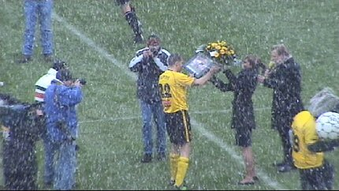

|
Roda JC - Ajax (1-2) 27 februari |
Roda JC
- Ajax (1-2) 27 februari
In een snijdende kou en bij sfeervolle sneeuwbuien
begon Roda-Ajax op de
vroege zondagmiddag.

Het veld lag er nog redelijk goed bij. Drie kwartier voor de
aanvang ligt de
Theo Pickée tribune er nog verlaten bij.
Het is niet goed dat de spelers van Ajax bij het betreden van het veld begroet
worden met de letters AJ.....
Rodagirl Angelique gaat over enkele ogenblikken vriend Roger die
nietsvermoedend op de oosttribune zit ten huwelijk vragen.
Kujovic is de eerste die de sneeuw induikt voor de warming-up.
Angelique met Wim Frijns en Rakker op weg naar Roger. Spannend!
What's it gonna be boy....yes or no!
Yeeeeeeeeeeeees (met de hand op het hart) !!
En daar staat de volgende blondie op de grasmat. Hoe het meiske
heet
weet ik niet meer maar ze zong heel leuk "You'll never walk alone".

De oostzijde ontpopt zich steeds meer als sfeertribune. Het grote
shirt ging
tegelijk omhoog met een doek van Ajax met de aandoenlijke smeekbede
"Win voor ons".
....en geef ons heden ons dagelijks brood, amen.

Marc Luijpers wordt nog even gehuldigd voor zijn 400e wedstrijd
van vorige
week.
Cristiano is neergesabeld.
Boukhari plat, Senden nu wel een kaart. Haverkort fluit erg
sympathiek voor
de gasten.
Sneijder neemt ruim de tijd voor een hoekschop.
Heitinga krijgt een gele kaart nadat hij de doorgebroken Kone
onderuithaalt.
Dat had dus in principe rood moeten zijn.
Vrij veel overtredingen vandaag. Hier ligt Sergio op de grond.
Maduro schiet op Kujovic's voet. De terug stuiterende bal komt
voor de voeten
van Charisteas die de bal simpel kan intikken: 0-1, (33').
Het eerste doelpunt van deze Griek. Gelukkig deed die andere niet
mee.
Via een vrije trap vindt Sneijder het hoofd van Escudé die Ajax
naar 0-2
kopt in de 42e minuut.

Enkele stewards bezoeken vak Z16. Een klein stormpje in een klein
glaasje
water wordt beheerst opgelost door enkele oude garde mensen.
Een knal-hard schot van Filipovic poeiert de sneeuw van de lat.
Middels een ultra-blitze omhaal scoort Cristiano 1-2 (64').
Het publiek krijgt een spannend en mooi duel te zien met zeer
veel kansen
aan beide kanten.
De zeer matig acterende Bodor is inmiddels vervangen door Jongen en ook
Colinet is gewisseld en wel voor Sonko (dubbele wissel).

Vanwege de sneeuw werd er tot tweemaal toe overgeschakeld naar
een
oranje bal.
De wedstrijd blijft tot het eind spannend, maar de gelijkmaker
wil er niet in.
De 3 punten gaan naar het niet geheel volle uitvak.
De Kick-Off werd bezocht door Cristiano en Brouwers.
Smaakt als limonade he meid ;-)
Roda
is helemaal uitgeknikkerd in de competitie. De Amstelcup was al
eerder voltooid verleden tijd. Nu moeten er nog voldoende punten bijeen
gesprokkeld worden om in elk geval nog aan de Intertoto mee te mogen
doen.
Voor een fotoverslag van Ajax-zijde: ajaxfotoside